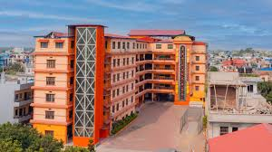
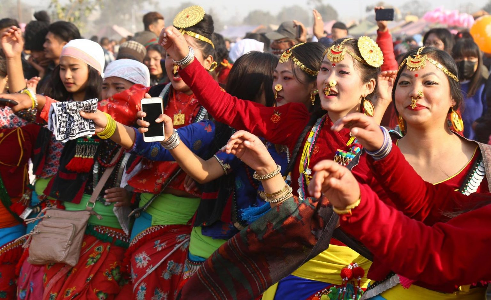

Education and Culture in Butwal
Education in the City
Butwal is recognized as one of Nepal’s major educational centers, with a high literacy rate and a wide range of schools and colleges that cater to students from across the region. The city has both government and private institutions that offer quality education, from early schooling to higher secondary and technical training. Among these, New Horizon English Boarding Secondary School, located in Devi Nagar and established in 2046 BS (1989 AD), stands out as one of the most reputable private schools in Butwal.
New Horizon provides education from Early Childhood Development (ECD) up to Grade 10, along with +2 programs in Science and Management. It combines academic excellence with a strong focus on student development through extracurricular activities, counseling, and modern teaching methods. The school is known for its moderate tuition fees, scholarship opportunities, and well-equipped facilities including a cafeteria, library, science and computer labs, internet access, and multimedia support. Schools like New Horizon contribute significantly to Butwal’s status as an educational hub, offering students a strong foundation for both national and international success.
|

|
|

|
The Vibrant Culture
Butwal is a culturally rich city that reflects the diversity of Nepal’s hills and plains. Located at the crossroads of major trade routes, it is home to various ethnic groups such as the Magar, Tharu, Gurung, Newar, Brahmin, Chhetri, and Muslim communities. This mix has created a vibrant cultural environment where different traditions, languages, and lifestyles coexist. Major festivals like Dashain, Tihar, and Lhosar are widely celebrated, while communities also observe Maghe Sankranti, Eid, and other ethnic-specific festivals. Traditional dances such as Kauda and Sorathi, along with a variety of folk music, add to the city's cultural identity.
Local cuisine in Butwal also reflects this diversity, blending flavors from the hills and the Terai. Popular dishes include dal bhat (lentil soup with rice), sel roti (sweet rice bread), and local specialties like dhido (millet porridge) and ghongi (snail curry), often enjoyed during cultural events. The city's cultural harmony is visible in its temples, mosques, and monasteries standing side by side, symbolizing peaceful coexistence. Butwal’s role as a trading hub has not only shaped its economy but also made it a melting pot of cultures and a symbol of unity in diversity.
|
© 9B Sabim's Group Project (Sabim, Bibek, Nim)
|